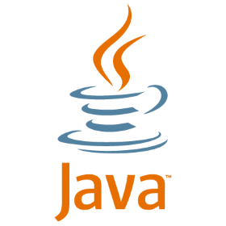
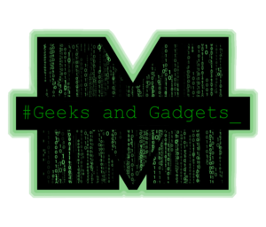

Projects
I have a variety of projects going on at the moment, most of which you can actively track on GitHub.
WAN-Tracker

The WAN-Tracker project is a simple set of scripts that I wrote to help him automate maintenance of his home server. Although the program would run fine without most of the scripts, I included them so that others could install and run his software with as little trouble as possible. This software is specialized for Linux servers, but in theory should run on OSX as well, although this has never been tested with the new versions. A version for Windows is not currently being developed, although this may change in the future.
Text Editor
The text editor is just a simple java project I did for fun to learn how to use Netbeans a little better. I think I have decided to abandon Netbeans after doing so. It is pretty counter intutive compared to the Intelij IDEA IDE. All in all I learned a lot from it and made a very simplistic text editor. It may not do much, but it does edit text. :)
Conky
Conkies are custom system monitors for Linux. You can learn more about them here. I have put together a few for my amusement and simply because I find them useful. In order for them to work, they will need a few edits on a system by system base. I built them to work on my computer, so they are specialized for my particular needs. The files are commented, so they shouldn't be to hard to edit and get working for your needs.
Marshall Geeks and Gadgets
I am a cofounder and the current president of Marshall Univerity's Geeks and Gadgets, an on campus organization geared toward computer science majors and those who have an interest in programmingand computing. I also contribute to and set up most of the current Geeks and Gadgets repositories.